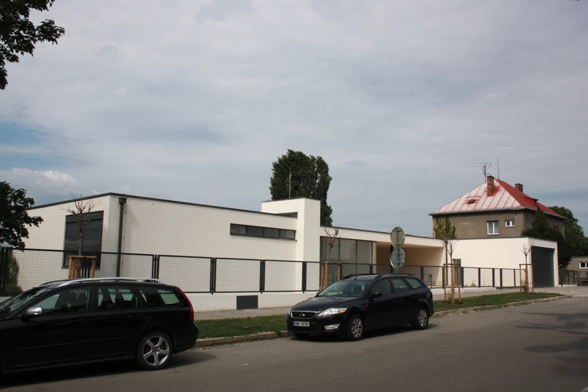

ここを見てみよう。
平らな屋根と、横に長い窓が見えます。低く伸びる白い壁と、道路との関係を観察できます。
作品・制作の例4件を紹介しています。実作品画像1点、参照・関連画像0点。画像の収集は継続中です。
建築の様式・批評用語
International Style
建物は、何で支えられているでしょう。
柱が支えるとき、壁や窓の配置にはどんな自由が生まれるでしょう。
住宅、学校、オフィスを比べ、見た目が似ていても目的は違うことを確かめます。
実作品を見る

画像を表示できませんでした。下の出典ページで確認できます。
ルートヴィヒ・ミース・ファン・デル・ローエ / 1929–1930年
2012年5月31日撮影。庭側や室内ではなく、道路側の外観です。
平らな屋根と、横に長い窓が見えます。低く伸びる白い壁と、道路との関係を観察できます。
ルートヴィヒ・ミース・ファン・デル・ローエ《トゥーゲントハット邸――道路側の外観》、1929–1930年。ブルノ、チェコ。CC BY-SA 3.0。写真：Harold、2012年5月31日。ウィキメディア・コモンズより。
出典で作品・資料を見る ↗CC BY-SA 3.0
建築の著作権が世界中で消滅したという意味ではありません。日本の著作権法46条による建築の写真利用と、米国の1990年以前に建設された建築の扱いを区別しています。
写真：Harold。CC BY-SA 3.0。
表示用画像は縦横比を保って縮小しています。原画像の寸法と取得時のハッシュは出典記録に残しています。
この掲載は日本・米国向けの作品解説としての利用です。他国での再利用や、室内・家具・図面の転載まで許諾するものではありません。
出典先の原画像を開く ↗画像の利用条件 ↗全体を残して縮小したJPEGとWebPです。切り抜き、拡大、色補正はしていません。原画像は出典先のリンクで開けます。
住宅建築本体
部屋の区切り方と、つながり方を考えるための住宅です。
家を支える材料と、中をゆるやかに分ける方法を、一緒に見ます。
作品・資料の出典を見る ↗原題：Tugendhat House
ルートヴィヒ・ミース・ファン・デル・ローエ（建築設計） / 建設1929–1930／完成1930 / 住宅建築本体
この住宅の空間のつくり方が、様式全体に当てはまるとはしません。今の修復後の写真と1930年の姿は区別します。MoMA所蔵の模型と建物そのものも、別々の記録です。
UNESCOが、インターナショナル・スタイルの特に重要な例と明記しています。建物を支える材料と、室内をゆるやかに区切る方法、つながる空間の関係を説明するために選んでいます。
建築を表す縮尺模型・展覧会資料
家の形を伝えるための、小さな模型です。
1932年に美術館で開かれた、建築の展覧会でも使われました。
実際の家と、家を説明する模型の違いにも目を向けます。
作品・資料の出典を見る ↗原題：Villa Savoye, Poissy-sur-Seine, France (Scale model, 1:33.3)
ル・コルビュジエ、ピエール・ジャンヌレ（建築設計）／ル・コルビュジエ、セオドア・コンラッド（MoMA記載の模型制作） / 1932（MoMA模型記録の年。建築竣工年ではない） / 建築を表す縮尺模型・展覧会資料
建築本体の1931年の引き渡しと、模型記録の1932年を区別します。模型画像は新たに掲載していません。模型に表れた細部を実画像で確認したとはしません。
建築の「五原則」という設計の考え方を説明する模型です。1932年にMoMAで開かれた最初の建築展で展示された、歴史的な資料でもあります。建物の設計思想と、それを展覧会で伝える活動の両方を見られます。
建築本体・住宅以外の作例
会社のための建物です。
たてに立つ板のような部分と、横に広がる土台を組み合わせています。
地上階や中庭の開かれた場所も、家とは違う使い方を考える手がかりです。
作品・資料の出典を見る ↗原題：Lever House
ゴードン・バンシャフト、ナタリー・ド・ブロワ／SOM（建築設計） / 建設1950–1952／完成1952（建築本体） / 建築本体・住宅以外の作例
米国のこの一例だけで、世界への広がり全体を代表させません。「米国初」などの表現や階数は、資料による違いを確認しきれていないため使いません。今の写真には、外壁の復元や改修を終えた姿が写っている場合があります。MoMAの模型は、建物とは別のものとして記録します。
ニューヨーク市のランドマーク指定報告は、この建物をインターナショナル・スタイルの広がりの中で重要なものとしています。縦に立つ板のような部分と、横に広がる土台、開かれた地上階や中庭の関係に注目します。住宅2例とは違う使い道と、1950年代の展開を説明する例です。
学校建築本体
用途の違う部分を、違う大きさで組み合わせた校舎です。
一つの正面だけでなく、建物の周りを歩くことが大切になります。
作品・資料の出典を見る ↗原題：Bauhaus Building, Dessau
ヴァルター・グロピウスと個人事務所の協力者（建築設計） / 1925〜1926年（1926年に使用開始） / 学校建築本体
学校としてのバウハウス全体を、インターナショナル・スタイルと同じ意味にしません。建物には戦災と修復の歴史があり、現在の写真と当初の材料は区別します。
住宅やオフィスに加え、教育と工房のための建築を比べます。用途ごとに違う大きさの部分がつながる構成です。
ヘンリー＝ラッセル・ヒッチコックとフィリップ・ジョンソンは、近代建築の共通点を「インターナショナル・スタイル」と説明しました。1932年のMoMA展では、建物を会場へ運ぶ代わりに模型や写真が考え方を伝えます。サヴォア邸の模型も、この展覧会で紹介された資料です。
これは全員が署名した団体名ではありません。MoMAによると、出品したフランク・ロイド・ライトは、この分類を拒みました。展覧会に参加したこと、共通の形が見えること、同じ思想を持つことは分けて考えます。
ニューヨーク近代美術館（MoMA） ↗ / ニューヨーク近代美術館（MoMA） ↗ / ニューヨーク近代美術館（MoMA） ↗
当時の批評で重視されたのは、重いかたまりに見せるより、薄い面で空間を包むこと。左右対称の正面をつくるより、窓や構造の規則的な繰り返しを生かすこと。そして、後から飾りを貼り付けるより材料や比率を生かすことでした。
その見方を手がかりに、柱と外壁が同じ役目を持つか、窓は何に沿って並ぶかを確かめます。ただし、これだけで暮らしやすさや建物の社会的役割まで分かるわけではありません。色が白いという理由だけで分類することもできません。
1925〜1926年のバウハウス・デッサウ校舎では、工房、教室、管理部門、住む場所が異なる大きさの部分に分かれ、つながっています。一つの正面だけでは全体が分からず、周りを歩くことで構成が見えてきます。
設計はグロピウスの個人事務所と協力者が担い、室内には学校の工房も参加しました。ヒンネルク・シェーパーの色彩計画は、場所の区別や空間の感じ方を助けます。「近代建築は無色」「一人の作者だけで完成する」という見方を問い直せる例です。
トゥーゲントハット邸では、柱や梁が支える室内を、木やオニキスの面がゆるやかに分けます。サヴォア邸では、柱で持ち上げた建物へ入り、スロープで上がるにつれ、室内や外の景色が変わります。二つの家は、同じ「箱」ではなく、空間を体験する違った提案です。
いずれも個人から依頼された住宅です。工業的な材料を使うことと、誰にでも手の届く価格の住宅になることは同じではありません。依頼者、用途、材料を一緒に読むと、外観だけの比較を超えられます。
1952年に完成したリーバー・ハウスは、米国の企業建築への展開を考える例です。住宅や学校とは異なり、会社の仕事場としてつくられました。初期の欧州の住宅と、戦後の高層オフィスを同じ目的の建物とはしません。
設計者の記録では、SOMとゴードン・バンシャフトだけでなく、ナタリー・ド・ブロワの仕事も残します。
MoMAは、彼女の設計への貢献が共同者の名に隠れがちだったことを説明しています。
一方、MoMAの展示模型をつくった人はセオドア・コンラッドです。
建築設計と模型制作の役割を区別します。
トゥーゲントハット邸は2010〜2012年に修復されました。このページの2012年の写真は道路側の外観で、室内や庭側を見せているわけではありません。内部の説明は、写真からの推測ではなく、建物を調べた機関の記録に基づきます。
デッサウ校舎も戦災と修復を経ています。今ある材料、元の設計、模型が示す形は、それぞれ別の証拠です。また、この章の欧米の例だけで世界各地の近代建築を説明せず、別の地域では気候、制度、材料がどう関わったかを個別に調べる必要があります。
ドイツ・デッサウ
校舎を、学ぶ場所、つくる場所、住む場所の組み合わせとして読みます。バウハウスという学校の全活動と、この建築の様式名を同一視しません。
チェコ・ブルノ
トゥーゲントハット邸を通して、構造と室内の仕切りの関係を考えます。掲載写真が示すのは道路側だけです。
フランス・ポワシー
サヴォア邸は1931年に引き渡された週末住宅。1932年のMoMA模型は、その考えを伝えた別の資料です。
米国・ニューヨーク
1932年のMoMA展による紹介と、1952年のリーバー・ハウスを分けて読みます。展示による普及と、建物の利用目的は同じ出来事ではありません。
グロピウスがバウハウスを創設。これは学校の始まりで、インターナショナル・スタイルの団体結成ではありません。
バウハウス・デッサウ校舎を建設。用途の異なる部分を組み合わせる。
トゥーゲントハット邸を建設。1930年完成。
サヴォア邸の建築本体を引き渡す。MoMA模型の1932年とは別です。
MoMAで「Modern Architecture: International Exhibition」を開催。サヴォア邸の模型も紹介される。
ニューヨークのリーバー・ハウスが完成。企業のオフィスへの展開を考える例。
トゥーゲントハット邸の修復。建物の完成年や掲載写真の撮影年とは区別する。
新しい材料や工業生産を使って、住まい、学校、仕事場をどうつくるか。
近代の建築家は、この問いに異なる答えを出しました。
1932年のニューヨークの展覧会は、欧州を中心とする作品を模型や写真で紹介し、共通する形を読み取りました。
ただし、展示に含まれた建築家が全員、その分類に賛成したわけではありません。
決まった共通の配色は確認できません。Tugendhat邸のローズウッド（木材）やオニキス（石材）、Lever Houseの青緑色のガラスやステンレス鋼など、材料と色の関係を見ます。白い外壁だけでは判断できません。
建築そのものに共通する書体はありません。建物の名前を示す文字、展覧会の印刷物、案内表示の文字は、それぞれ別の対象として調べます。
直線的な形や材料に加えて、何が建物を支えているかを見ます。
Tugendhat邸では鋼の梁（はり）、床を支えるコンクリートの板、大きな窓を確認できます。
MoMAはVilla Savoyeについて、ピロティ（柱で建物を持ち上げた地上部分）、自由な平面と立面（部屋の配置と外壁の構成）、横につながる窓、屋上庭園という五原則を説明しています。
Tugendhat邸では、空間がつながりながら、ローズウッドやオニキスでゆるやかに区切られます。
Villa Savoyeでは、自由な部屋の配置と、スロープやテラスの関係を見ます。
Lever Houseでは、縦に立つ板状の建物と低く横に広がる部分、開かれた地上階、中庭を比べます。
これらは各作品の工夫であり、全作品に当てはまる条件ではありません。
インターナショナル・スタイルは、近代建築全体や、バウハウスという学校全体と同じ意味ではありません。
建築の共通点を読み取る批評上の枠組みです。
建築家本人がその分類を拒む場合もありました。
また、スイスを中心とするグラフィックデザインの「インターナショナル・タイポグラフィック・スタイル」とは別の章です。
トゥーゲントハット邸では、2010〜12年の修復で1930年当初の姿を目指したと記録されています。
リーバー・ハウスは1952年の完成、2001年の外装の復元、2023年の改修を分けて記録します。
今の写真が、完成当初の姿をそのまま写しているとは限りません。
近代建築が世界に広がった理由を、すべてインターナショナル・スタイルの影響とはいえません。
ほかの地域や後の時代への具体的な影響は、追加の調査が必要です。
名前を開くと、生没年、主な仕事、作品と出典を読めます。ここに挙げた人だけで、この項目の全体を説明するものではありません。
Ludwig Mies van der Rohe
ドイツに生まれ、米国でも活動した建築家。トゥーゲントハット邸では、構造の骨組みと室内を仕切る面を組み合わせ、空間のつながりを考えました。
インターナショナル・スタイルの重要な住宅例を設計。建物、家具、模型、写真は別の対象として記録します。
1930年完成。1932年など別年の模型や、2012年の撮影日とは区別します。
人物の出典：ニューヨーク近代美術館（MoMA） ↗ / ユネスコ世界遺産センター ↗
Le Corbusier (Charles-Édouard Jeanneret)
スイスに生まれ、フランスで活動した建築家。サヴォア邸ではピエール・ジャンヌレとともに、柱、窓、屋上庭園やスロープを組み合わせ、新しい住宅の空間を示しました。
初期の住宅と五原則を扱います。後年を含む全作品を、一つの様式だけに分類するものではありません。
ル・コルビュジエとピエール・ジャンヌレの共同設計。章で紹介する1932年のMoMA模型48.1932とは別の物件です。
人物の出典：ニューヨーク近代美術館（MoMA） ↗ / ル・コルビュジエ財団 ↗
Walter Gropius
バウハウスを創設し、1919〜1928年に校長を務めた建築家。デッサウ校舎を設計し、教育、工房、工業生産を結びつけました。のちに米国でも建築と教育に携わります。
デッサウ校舎を通して近代建築の空間を考えます。バウハウスの全活動が、この様式名に収まるわけではありません。
グロピウスの個人事務所と複数の協力者が計画・実現を担いました。学校の工房も室内に参加しています。
人物の出典：バウハウス・コオペラツィオン ↗ / バウハウス・デッサウ財団 ↗ / バウハウス・デッサウ財団 ↗
Natalie de Blois (Natalie Griffin de Blois)
SOMでバンシャフトらと協働し、リーバー・ハウスなどの設計と建設に携わった米国の建築家。後には教育に取り組み、建築の分野で働く女性のためにも活動しました。
初期の欧州の活動家と同じ役割にせず、米国の戦後展開に関わる人物として紹介します。共同制作のクレジットを省きません。
SOMでゴードン・バンシャフトとナタリー・ド・ブロワが担った仕事。共同クレジットはMoMA模型記録730.1959も参照。模型作者セオドア・コンラッドとは役割が異なります。
人物の出典：バージニア工科大学・特別コレクション／大学文書館 ↗ / ニューヨーク近代美術館（MoMA） ↗ / プリツカー建築賞 ↗
Gordon Bunshaft
SOMで長く活動した米国の建築家。リーバー・ハウスなどを通じ、近代的な企業の仕事場をかたちにしました。作品は共同者や設計事務所との関係も含めて読みます。
リーバー・ハウスを、1950年代の米国への展開例として扱います。建物を一人だけの仕事として説明しません。
SOMでゴードン・バンシャフトとナタリー・ド・ブロワが担った仕事。共同クレジットはMoMA模型記録730.1959も参照。模型作者セオドア・コンラッドとは役割が異なります。
人物の出典：プリツカー建築賞 ↗ / ニューヨーク近代美術館（MoMA） ↗
デッサウの学校、ブルノとポワシーの住宅、ニューヨークの企業建築を比べます。
サヴォア邸の代表資料はMoMAが1932年と記録する模型で、実際の建物とは別です。
この選択だけで世界の近代建築を代表させず、学校教育、住宅、企業の仕事場という用途の違いを読みます。
画像がない作品は、一次資料の作品情報へ案内します。
作品・制作の例4件を紹介しています。実作品画像1点、参照・関連画像0点。画像の収集は継続中です。